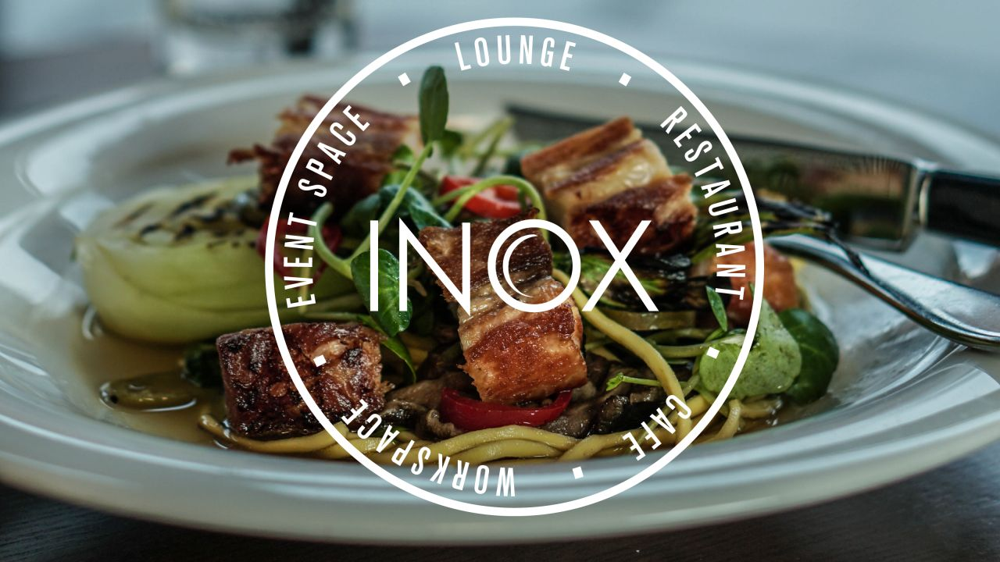
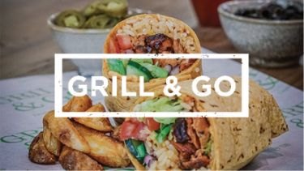
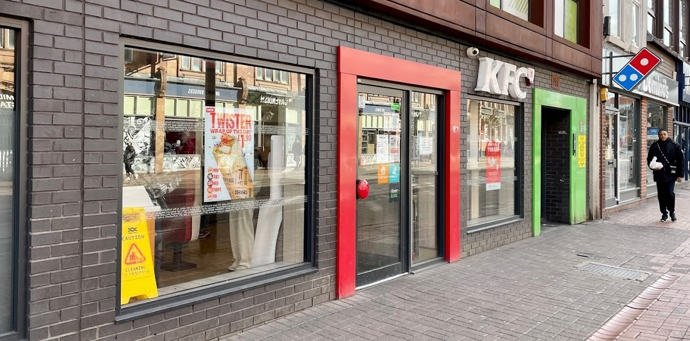

Whether you're in need of a quick bite, a cosy place to study with a coffee, or a spot to enjoy a meal
with friends, the areas around the University of Sheffield have plenty of options to offer. Here are
some of the places recommended by the admins.
Grab a bite at the heart of the campus – located in the iconic Diamond Building, the Diamond
Kitchen is the perfect spot for students, staff, and visitors to recharge. Offering everything from bold
coffee and quick snacks to hearty meals with vegetarian and vegan options, there's always something
tasty for everyone. Stop by, recharge, and keep your day going strong!
Where you can find us
We are located at the south entrance of the Diamond Building, across from the main reception desk.
Inox Dine
If you’re near the Students' Union, Inox on the fifth floor is a must-try. With its sleek vibe and big
windows overlooking Sheffield, it’s ideal for a meal or casual celebration. The menu blends British
classics with international flavours, featuring dishes like crispy fish and chips and a creamy beetroot
risotto. Friendly service, gorgeous views, and great food – Inox is well worth a visit!

Where you can find us
We are on Level 5 of the University of Sheffield Students' Union building.
Grill & Go
For a quick, tasty bite at the University of Sheffield, Grill & Go is a top choice. With juicy
burgers, loaded wraps, and fresh salads, it’s ideal for students craving something fast and delicious.
The portions are generous, the flavours are bold, and the prices are student-friendly – perfect
for grabbing a hearty or light meal on the go.

Where you can find us
We're located on the third floor of the Students' Union building.
Jessop Café
Located in the heart of campus, Jessop Café is a cosy spot for students to recharge. Serving up quality
coffee, fresh pastries, and light bites, it’s perfect for a quick snack or study break. With a laid-back
vibe and plenty of seating, it’s a great place to catch up with friends or dive into coursework.
Where you can find us
You can find us in the Faculty of Arts and Humanities at the Jessop West building on Gell Street.
KFC Sheffield - West Street
KFC is a perfect spot when you’re craving a quick, satisfying meal. Whether you’re after a classic
bucket of fried chicken, a wrap, or a burger, there’s something for everyone. With generous portions and
fast service, it’s ideal for a break between classes or a casual meal after work. Offering both dine-in
and takeaway options, it’s a go-to for comfort food that’s always quick and delicious.

Where you can find us
It is on West Street, just a 3-minute walk from the Diamond Building, and located to the west of the
main University buildings.